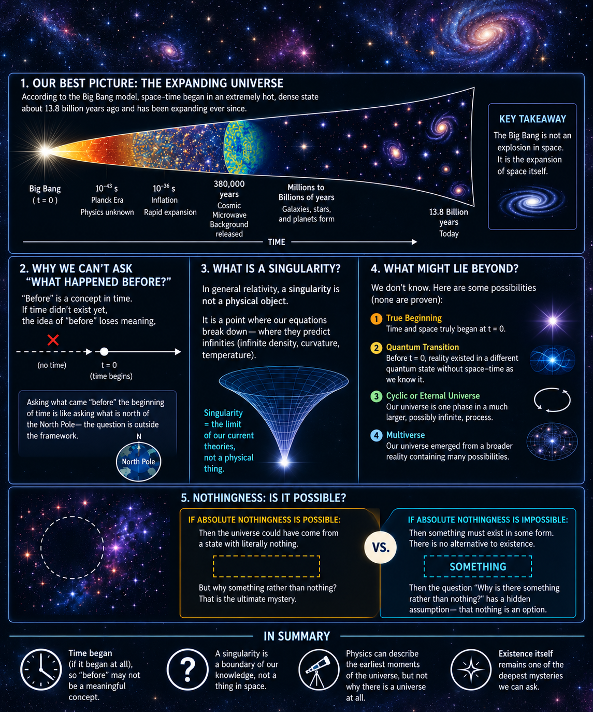

Desktop: hover over a section to preview the exact question, then click to ask Google AI. Keyboard: use Tab to preview and Enter to open it. Mobile: tap a section to ask the question; swipe sideways to explore the infographic.
Tap a section to explore the question with Google AI

Desktop: hover over a section to preview the exact question, then click to ask Google AI. Keyboard: use Tab to preview and Enter to open it. Mobile: tap a section to ask the question; swipe sideways to explore the infographic.